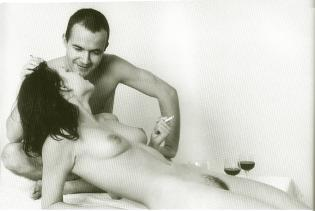

Liebesgedichte und erotische Fotografien, mit Fotos von Hans-Jürgen Paul Franke, Verlag Buchhaus Suhl 1997
DANACH
Die Wärme noch
Deines Leibes
Das Einverständnis
Der Stille zwischen uns
Unsere Hände leicht
Aneinandergelegt
Komm nun, Schlaf
So könnte der Abschied sein
Hätten wir einmal
Genug
LIEBSTE
Laß die Leinen los
Laß uns schnelln
Durch alle Tiefen
Laß uns sinken
Bis zum Grund
Liebste, laß uns fliegen
Über die Sekundensümpfe
Jahreswüsten, laß uns
Mit den Nebeln schweben
Wenn wir müd geworden sind
Doch bis dahin laß uns
Stunden schlürfen
Zügellos
Liebste
Mach die Leinen los